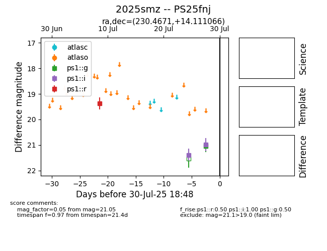

Target 2025smz at 2025-08-05 22:30, see:
TNS: wis-tns.org/object/2025smz
YSE: ziggy.ucolick.org/yse/transient_detail/2025smz
alt names
2025smz (yse,tns)
PS25fnj (panstarrs)
coordinates:
equatorial (ra, dec) = (230.4671,+14.11107)
galactic (l, b) = (20.2341,+52.65063)
photometry
last ps1::g=21.05, ps1::i=20.98, ps1::r=19.38
1 ps1::g, 2 ps1::i, 1 ps1::r detections
